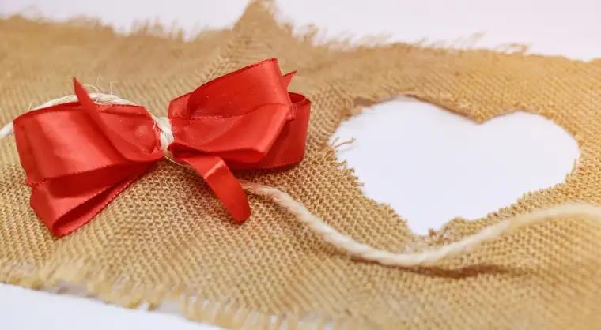

This “Sidewalk Story” began last spring, when a fellow sidewalk prayer advocate and I separately approached a man who’d just brought a woman into the abortion facility downtown Fargo.
In my years helping with this ministry, I’d heard about “saves,” when those who pray at these facilities successfully draw the potential clients away. But I’d never been part of one. If a save did happen, it would always be before or after my shift.
Though I knew that saves cannot always be measured, I wondered if God would ever show me the fruits of my weekly commitment.
The thing is, God asks us only to show up. If we are listening to his voice, we will recognize the honor of doing so. But we’re not guaranteed seeing the fruits of our efforts in this lifetime.
But God, in all his kindness, did show me that day last spring.
I was first to approach the young man as he exited the Red River Women’s Clinic. As a sidewalk advocate, we need to be open and ready for anything. Some people are downright nasty with us, and others, receptive.
Surprisingly, he seemed open, so, seeing the opening, I began gently pleading, trying to paint the picture of what might be possible with a U-turn.
“I don’t want this,” he’d said, “but she’s made up her mind.”
“It’s never too late,” I offered. “You can be a hero today for your family.”
He was carrying, in one hand, a car seat with another young child. Certainly, I could understand the panic of the young woman I later learned was his girlfriend. It can be downright overwhelming, the gift of new life.
But the taking of that life can be far more overwhelming, not to mention devastating. For many, by the time they realize this, it’s too late; the wounds are already festering. Our purpose is to stand in the gap and try to help bring illumination, before it’s too late.
At some point, though, I lost him – or so it seemed. My cohort then approached him at his vehicle and, among other things, explained that babies aborted at the facility are discarded like waste. It was a last-ditch effort, she later explained, to help him see.
But he got in his car and drove away. Feeling the defeat, the two of us went on a walk to process what we’d just experienced, lamenting the missed chance.
As we rounded the corner a block north of the facility, a car suddenly pulled up alongside us, and in it was the man to whom we’d been talking, and the woman. She rolled down her window. “I’m not going to do it,” she said.
I don’t think I’ve ever experienced such disbelief and joy all in one. Soon, we were accompanying them to FirstChoice Clinic, where an ultrasound was taken, and the family, led into hope.
It was one of the happiest days of my life, and made even more so when the woman asked if she could stay in touch with me, to which I said, “Yes!”
But even that did not compare with what I experienced a few weeks ago when I had a chance to meet the beautiful baby girl we helped save that day. Oh, glorious moment, when God showed me the fruits, here on earth. Oh, beautiful child of God, who now breathes, and has a future.
You might say Christmas came early to me this year, in this precious new life.
Since then, I’ve had the chance to bring gifts and a meal to this little family, and to thank God over and over for touching their hearts. It would be tempting to feel ownership over what has unfolded, but I don’t. I just happened to be there when God started moving, and am more blessed observer and witness to God’s movements in another soul than anything. But praise him for that.
I can’t think of a better way to end my first year of Sidewalk Stories. And I look ahead with hope, and a request. I would love this column, in 2018, to include some of your experiences of witnessing the prolife culture in action, whether on the sidewalk, or some other way you’ve been touched by the message of life. Please send your inspirations to my email below.
And may God bless those who work to preserve life in any way, and those who choose it. “For unto us a child is born,” a child destined to bring light to dark places. Rejoice!
[Note: I’ve been writing about my experiences on the sidewalk Downtown Fargo on Wednesday, the day abortions happen at our state’s only abortion facility, for a year now for New Earth magazine — the official news publication of the Fargo Diocese. I think these stories are worth repeating, so I’ll begin doing so here after original publication, including playing catch-up with the 11 I wrote in 2017. I hope you find “Sidewalk Stories” helpful in understanding the truth about abortion and how it plays out tragically each week here in Fargo, N.D. The preceding ran in New Earth’s Dec. 2017 issue.]